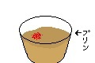

湯豆腐のかたまり──Assemble Yudofu
湯豆腐のかたまり──Assemble Yudofu
七味唐辛子の可能性を模索してみる
１ 残さない 七味をかけたら何が何でも完食する。
２ 人前では堂々とやらない 堂々とやると狂人だと勘違いされてしまいます。
３ 食品に感謝 当たり前だよなぁ？
４ きちんとやる ちゃんとかけて！
というわけでスタート
図のようにかけている部分の表面が見えないくらいまでかけて食べてみる。あぁ～^たまらねえぜ。
食べてみた結論としては、かなり美味しい。マジで。
七味唐辛子の柑橘系の香りとプリンの甘さがうまくマッチしてる。普通にアリ！
流石の私も卓上調味料への評価を360度(±0)ひっくり返してしまいました！
ふつうにおすすめなのでみんなも食べてみようね！
そして、味覚を大事にして、生きようね！！！
正直言ってあんまり変わらない。いい加減にしろ
割と多めにかけてもあんまり・・・変わらない？
原因として考えられるのは七味唐辛子とりんごの間の差異が小さかったこと。
七味唐辛子の辛さはりんごの甘さに吸収されていってる（あとから地獄でした）ので、残る七味唐辛子要素は七味の爽やかさだけ。
しかし、りんごも爽やかなのでほぼ何も変わらないのであった。
まあ、不味くはなかったけどね。おすすめする気はない